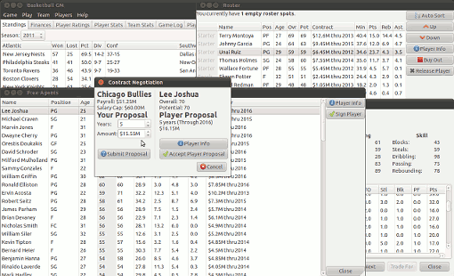

Basketball GM
{kind=link}
Basketball GM is a basketball simulation game. You are the general manager of a basketball team. Make trades, set the roster, draft players, sign free agents, and try to build the next dynasty.
Why is Basketball GM different than other sports simulation games? Well.. it's free! Basketball GM is licensed under the AGPL license, so it will always be free.
Download
Ubuntu package
This probably will work on any .deb-based distro (Debian, Mint, Ubuntu, etc).
Ubuntu users can also use the PPA and get automatic updates!
Windows installer
1.0.0alpha for Windows is the same as 1.0.0beta for Linux, it just hasn't been tested as much so I'm labeling it as alpha rather than beta.
Get the code
GitHub Repo
Basketball GM is written in Python, making heavy use of PyGTK and SQLite. Are you a programmer, hacker, artist, designer... whatever? Want to get involved? Your help is needed!
Documentation
Here is a draft of the manual.
News
2012-02-01: Since I'm not sure if I even have any users, I decided to have some fun by porting to GTK+ 3. That means that there probably won't be a new Windows release any time soon.
2011-08-15: Official release of 1.0.0beta for Linux and 1.0.0alpha for Windows.
2011-08-05: Launched basketball-gm.com, in preparation for releasing a beta version.
2011-06-05: Moved from Google Code to GitHub. Is that a sign of further activity to come?
2010-08-21: After a 2+ year hiatus, I committed some very minor improvements to SVN. However, I have no idea if this is an anomaly or a sign of things to come. Time will tell..
2008-08-08: Version 0.1 is released. Try it out. If you think it looks interesting and you can code, email me. There are a lot of things that can be improved.
2008-08-03: All the goals for 0.1 are now complete except for the trade AI and a little bit of polish. Expect a release later this month.
2008-07-27: Right now I am working towards an 0.1 release that will include basic functionality, but the AI will be weak, the UI won't be polished, etc. But it will be a good framework to test and build on. The only major components left are finances (ticket and TV revenue, etc.), trades (UI is there but AI is not), and playoffs. But if you checkout the latest source, it should run on most Linux distros and do everything except the three things I just mentioned, if you want to play around with it. Regular season, roster management, free agents, draft, stats... all that stuff is in some rudimentary working form.